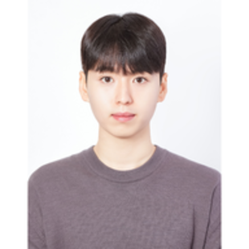
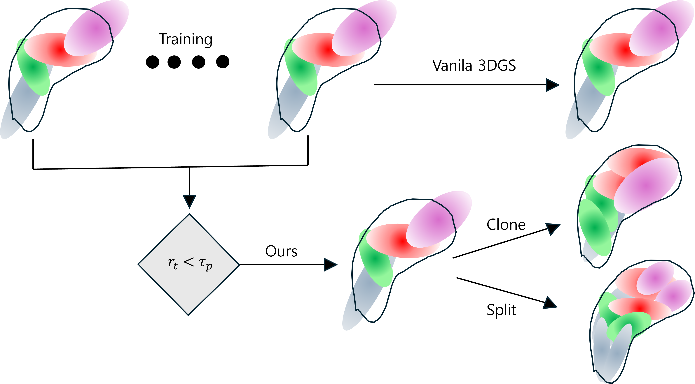
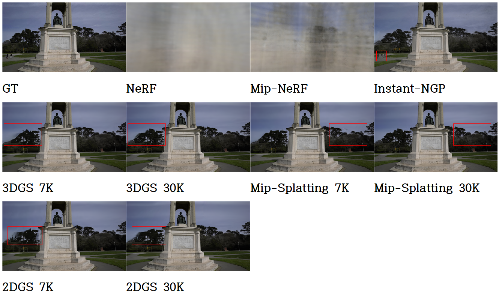
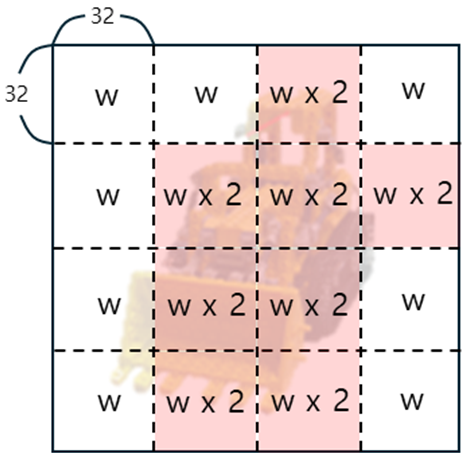
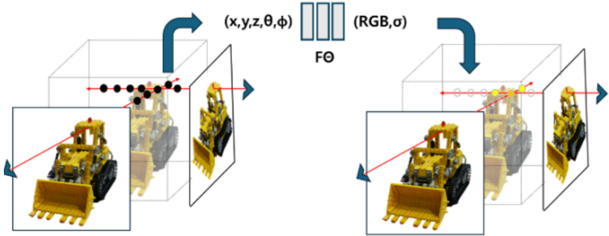

Research Engineer
Media for Machine Lab (M4ML), Dong-A University
Advisor: Prof. Jeongil Seo
I am an undergraduate student pursuing a B.S. in Computer Engineering at Dong-A University, where I am advised by Prof. Jeongil Seo.
My research interests include deep learning, computer vision, 3D vision, and 3D reconstruction. In particular, I am interested in neural scene representations such as Neural Radiance Fields and 3D Gaussian Splatting.


Proceedings of the Korean Institute of Broadcast and Media Engineers Conference, pp. 1047–1050, 2026

Journal of Broadcast Engineering, vol. 30, no. 6, pp. 927–941, 2025

Proceedings of the Korean Institute of Broadcast and Media Engineers Conference, pp. 24–27, 2025

Proceedings of the Korean Institute of Broadcast and Media Engineers Conference, pp. 1530–1533, 2025
Media for Machine Lab (M4ML), Dong-A University
Advisor: Prof. Jeongil Seo
B.S. in Computer Engineering
GPA: 4.13 / 4.5
2025 Summer Conference of the Korean Institute of Broadcast and Media Engineers
한국방송미디어공학회 2025년 하계학술대회 대학생 논문 및 캡스톤디자인 경진대회
SZU–DAU International Hackathon
One Punch Ralph-thon in Busan